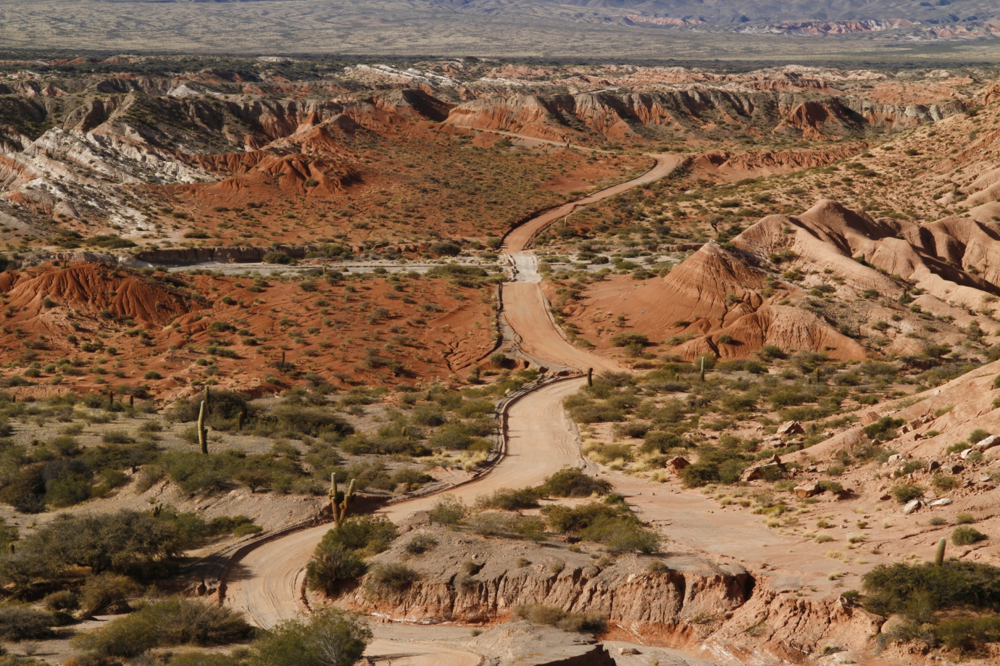
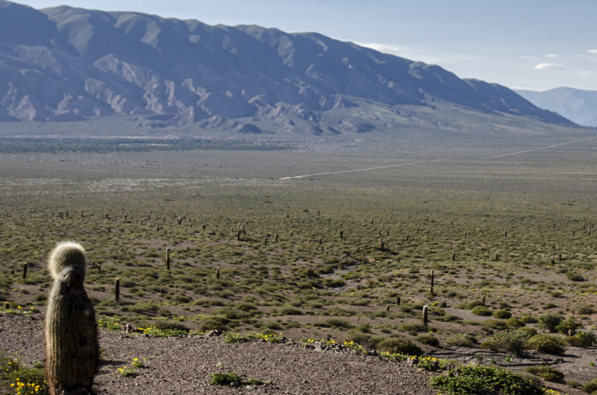
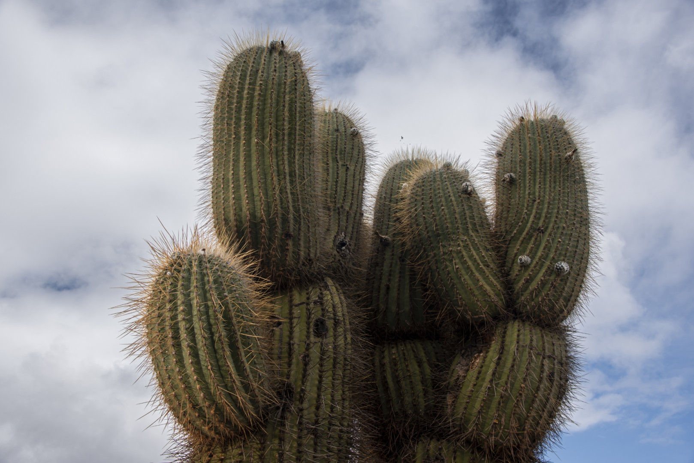
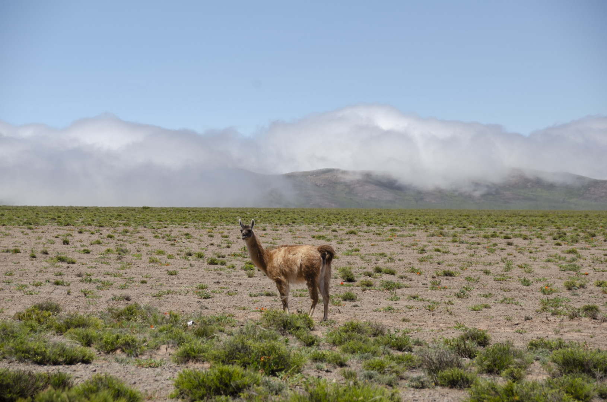

Características ecológicas y climáticas
El Parque posee muestras de ambientes naturales de diferentes ecorregiones: los Altos Andes, la Puna, el Monte de Sierras y Bolsones (en donde se desarrolla el cardonal); y hasta un sector con pastizal de neblina, propio de la región de las Yungas.
El sector que corresponde a la ecorregión del Monte es el sitio con mayor diversidad de cactus del país y una de las más altas del mundo. Además de las importantes y emblemáticas concentraciones de cardón o pasacana, se hallan endemismos que se desarrollan exclusivamente en este parque.
El clima es árido en gran porcentaje del Área, con gran amplitud térmica; temperaturas medias: 11° C en invierno (con mínimas bajo cero) y 18° C en verano (con máximas de 30° C); hasta 150 mm anuales de lluvias, concentrados entre noviembre y marzo; nevadas excepcionales en las zonas bajas.
Flora
Este Parque Nacional conserva una densa muestra de cardón o pasacana (Trichocereus pasacana). Si bien en nuestro país hay otras especies, esta es la típica. Las comunidades altoandinas son estepas de pastos y/o arbustos bajos. En sitios donde aflora el agua se forman las vegas de altura, ojos de agua rodeados por un césped verde y apretado, pequeños oasis en el desierto.
En el Monte principalmente se destaca la diversidad de cactus. Se trata del sitio con mayor diversidad del país y una de las más altas del mundo.
Fauna
En cuanto a la fauna, también habitan el Parque especies amenazadas como el gato del pajonal, la monterita serrana (Poospiza baeri) o el zorro colorado. Ejemplos de fauna típica de sus ambientes son el tuco tuco puneño, el carpintero andino, la culebra andina y la ranita de las piedras. Además cabe mencionar al guanaco, cóndor andino, el zorro gris, zorrino, guaipo (o copetona) y el chinchillón. Destaca la presencia del yasto o carpintero de las piedras (Colaptes rupicola), ave emblemática del Parque.





